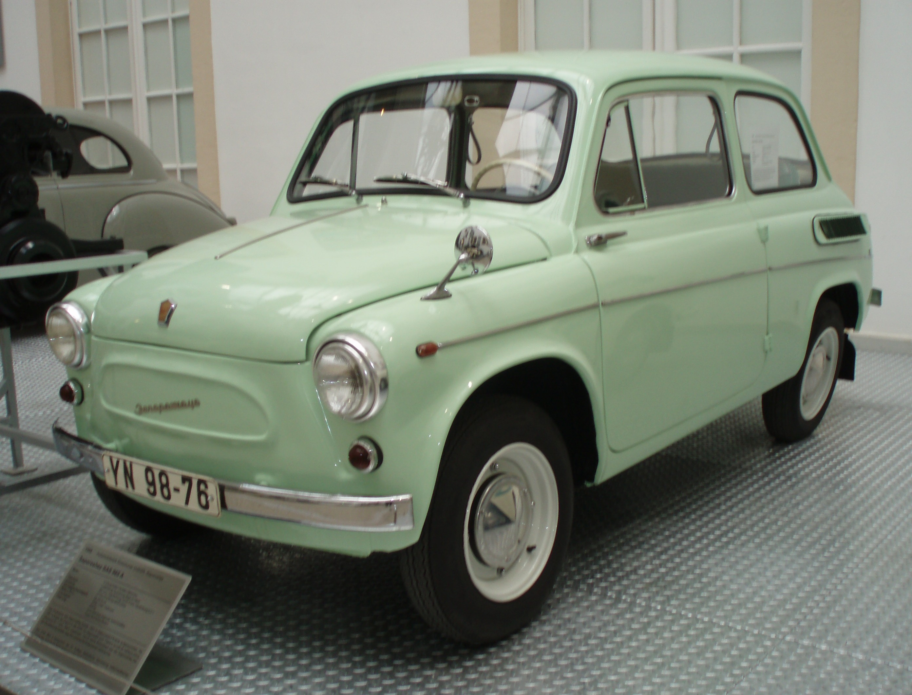

Запорожець ЗАЗ-965


Запорожець ЗАЗ-965.
У 1962 році ЗАЗ-965 був модернізований і в жовтні встав на конвеєр під назвою ЗАЗ-965А. ЗАЗ-965 перетворювався на ЗАЗ-965А традиційно для радянського автопрома методом послідовних наближень - починаючи з жовтня 1962 року (двигун змінився на новий МЕМЗ-966 потужністю 27 к.с. і робочим об'ємом 0,887 л) десь до квітня-травня 1963 року (була встановлена нова коробка передач з передавальними числами, зміненими під МЕМЗ-966). З вересня 1963 року змінився капот. Номер почав розташовуватися вище, змінився корпус ліхтаря підсвічування номера.